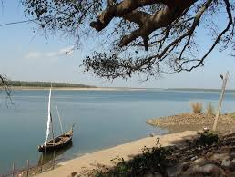

About Me

Hi, I'm Sai Kiran, a proud resident of Chirala. I love Coding, and I’m passionate about sharing my village's beauty with the world. My village Razole is a town in Dr. B.R. Ambedkar Konaseema district of Andhra Pradesh, India. The town is surrounded by the river Vashishta (Godavari) and is known for its coconut and palm trees. Several Tollywood directors have used the region around Razole as a backdrop for films, including Ladies Tailor, Chanti, Kabaddi Kabaddi, and Vinayakudu. The resort of Dindi is located on the banks of the Godavari.
About My Village
Ramapuram Beach
Razole has a good number of schools. ZP Boys high school is the oldest, celebrating its 100th year anniversary in 2018. Sobhana High school, Narayana e-Techno, Ravindra Bharathi, and Akshara are the most popular schools in the locality. Sobhana and Ravindra Bharathi are the oldest of all these schools. Sobhana English medium high school When it comes to colleges in Razole, the town is home for colleges like Sri Chaitanya junior college, Narayana college, Andhrapradesh social welfare college (gurukul) and Government junior & degree college, Razole..
Chirala Clock Tower

Razole is a large village located in Razole Mandal of East Godavari district, Andhra Pradesh with total 3592 families residing. The Razole village has population of 13597 of which 6585 are males while 7012 are females as per Population Census 2011. In Razole village population of children with age 0-6 is 1201 which makes up 8.83 % of total population of village. Average Sex Ratio of Razole village is 1065 which is higher than Andhra Pradesh state average of 993. Child Sex Ratio for the Razole as per census is 922, lower than Andhra Pradesh average of 939. Razole village has higher literacy rate compared to Andhra Pradesh. In 2011, literacy rate of Razole village was 86.71 % compared to 67.02 % of Andhra Pradesh. In Razole Male literacy stands at 89.90 % while female literacy rate was 83.75 %. As per constitution of India and Panchyati Raaj Act, Razole village is administrated by Sarpanch (Head of Village) who is elected representative of village. Our website, don't have information about schools and hospital in Razole village